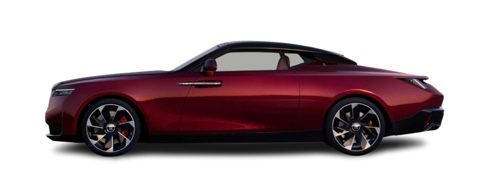
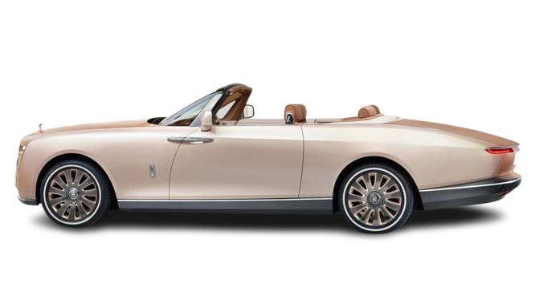
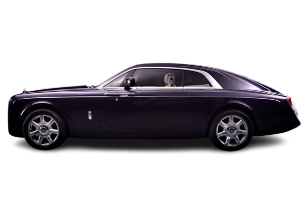

Rolls-Royce Limited was a British luxury car and later an aero-engine manufacturing business
established in 1904 in Manchester by the partnership of Charles Rolls and Henry Royce.
Founders: Henry Royce, Charles Rolls
Owner: Rolls-Royce Holdings
Founded: 15 March 1906, Manchester, United Kingdom
Headquarters: Derby, United Kingdom
Defunct: April 1987
Rolls-Royce's Top 3 Icons of Elegance and Luxury:
Rolls-Royce La Rose Noire Droptail
This two-seater supercar is valued at $30 million and is considered
the most expensive car in the world. It has a twin-turbo 6.75-liter
V-12 engine and a body made of carbon, steel, and aluminum.

Rolls-Royce Boat Tail
This 18.7-foot-long convertible is valued at $28 million.
It has a twin-turbo V12 engine and an 8-speed automatic transmission.
Only three Boat Tails were produced.

Rolls-Royce Sweptail
This car is valued at around $12.8 million and is considered the
sixth most expensive car in the world. It was inspired by
a luxury yacht and took four years to create.

#LuXuRy. .......................................................................................................................................................................................................................................................................................................